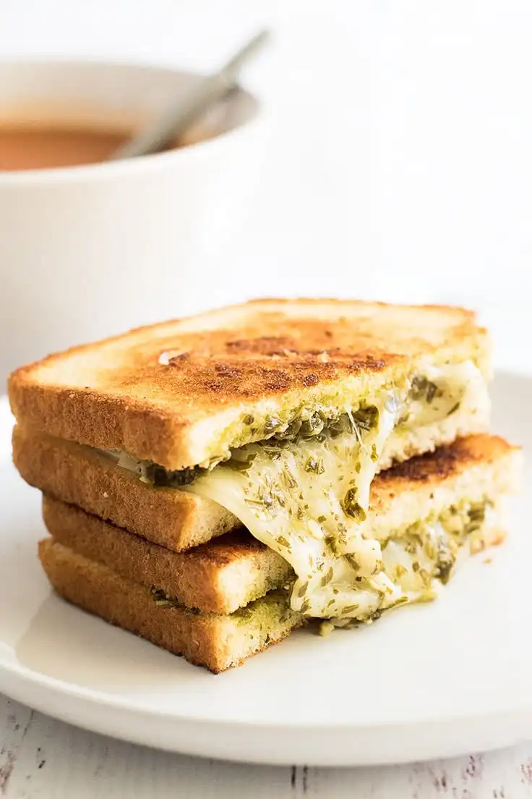

Grilled Cheese

Description
This fantastic grilled cheese will not only fill you up, but will use some leftover Pesto sauce in the process!
With it, you just can't go wrong!
Ingredients
- 2 slices wheat bread
- 1 to 2 tablespoons Pesto
- 1 slice provolone cheese
- 1 pinch garlic powder
- 1 tablespoon butter (or mayonnaise)
Steps
- Make sandwich, spreading pesto over both pieces of bread and placing a slice of provolone cheese between.
- Heat a small skillet over medium heat.
- Spread butter or mayonnaise over the outside of your sandwich and cook until both sides are golden brown and cheese is melted.
- Sprinkle some garlic powder over the finished product.
- Serve and enjoy!
This recipe taken from Baking Mischief.
Click here to go back...